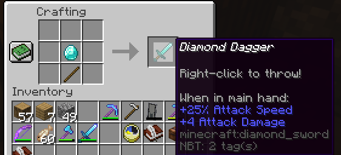
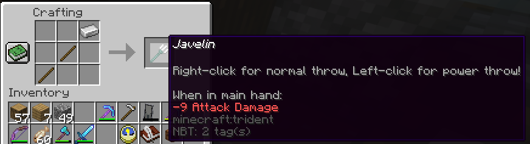

In addition to our other custom items, we also have a good selection of custom weapons which will be expanded apon in later updates. This includes custom swords, throwing items, axes, shields, and even a couple weapons intended only for offhand use! All are marked below.
| Output | Recipe | Description |
|---|---|---|
| Dagger |  | Ranged and melee - Teleports back to inv - 50% vanilla damage - 1/2 normal durability |
| Scythes |  |
Ranged and melee - slightly under vanilla damage (-1) - Attack cooldown same as axes - Gives short wither debuff and weakness on throw - Teleports back to inv. |
| Hatchets |  |
Ranged and melee - Vanilla damage - Throwing deals 3 durability points - Slower speed and lower throwing distance |
| Battle Bow |  |
Ranged and melee - Deals slightly more than stone sword's damage - Slightly longer attack speed than stone sword - gives 25% speed boost when held - Decreases armor by 2 |
| War Crossbow |  |
Ranged and melee - Diamond Axe damage - Very slow attack speed - 20% speed loss - Immunity to knockback and +4 armor toughness |
| Throwing Knives |  |
Ranged only - Quick usage, long distance - Teleport back to inventory - 75% vanilla damage - 1/3rd normal durability. |
| Javelin |  | Ranged only - Functions as trident when right-clicked - Left click deals heavy damage with large cooldown - Left click throw does 5x durability damage. |
| Rapier |  |
Melee only - Deals around 3/4ths vanilla sword damage - +50% speed boost while held - +50% attack speed - half durability. |
| War Axe |  |
Melee only - Very slow attack speed - Add +1 armor and +2 armor toughness - Deals around 1/3rd more damage than vanilla axes |
| Secondary Crossbow |  |
Offhand only - Half Durability - +3 hearts, +2 armor toughness and armor - -25% attack damage/attack speed |
| Secondary Bow |  |
Offhand only - Half durability - Complete knockback immunity - Increases attack speed by 50%, attack damage by 25% - Reduces armor toughness to 0 - Increases mob attention radius |
| Tower Shield |  |
Offhand only - 1000 durability - Complete knockback immunity - +2 extra hearts - Slows movement by 35% - Mobs notice from further away |
| Buckler |  |
Offhand only - double durability - gives +25% to attack speed, Attack damage, and movement speed - Lowers armor by 4 points and toughness by 2 |
| Cheaper Arrows |  |
- |
Daggers, Throwing Knives, Scythes, Hatchets, Rapiers, and War axes all can be crafted with any other materal as well as the diamond shown (Wood, Gold, Stone, and Iron). Any recipe that uses wood will require oak wood planks specifically.